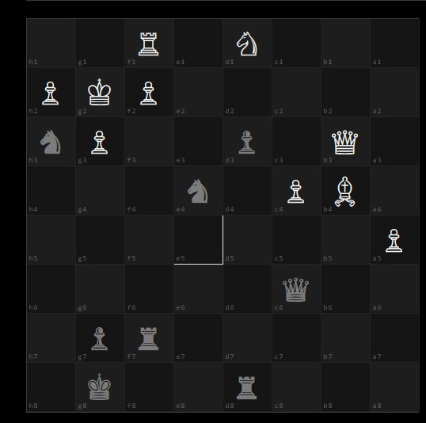
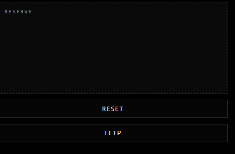
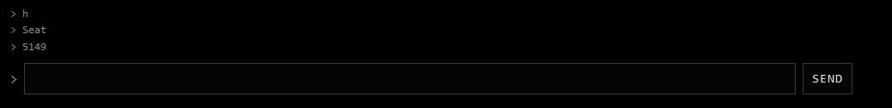

←Back To Main Page
Env_Feed (website)

Env_feed is a website linked to sanddollar, alot of it has been used to progress through the server. It is a generic chess website with a black background and ASCII Text on top written ("ENV_FEED"), on the right side, there are 2 buttons and a box that says "Reserve"
The top button says RESET, It's purpose is for reseting the chessboard's peices back into their original positions.
The bottom button says "FLIP", it's intended for switching from black to white, and from white to black.
The "Reserve" Box is for placing captured peices out of the chessboard

However, there was also a mysterious input box which was used for disabling the seat input kick message.

By putting the chessboard in the same order as the first image of this page above, a bunch of distorted letters appear, the team call this "Static". Typing a lambda icon ( λ ) into the input box while the static is visible, A controllable sanddollar appears.
Keys that moved the sanddollar : Letters = W, A, S, D, E, Q, Z, C, Space, Numbers = 1,2,3,4